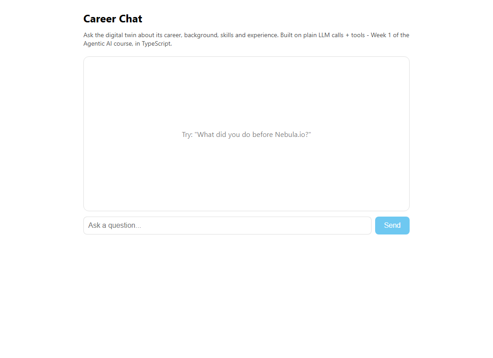

Week 1 · Day 5 — The Career Agent
Build a career "digital twin": a chatbot that answers as you, uses tools to record unknown questions and leads, pushes you a phone alert, and deploys to a public URL.
Companion to Ed Donner's course · uv setup · Python (+ TypeScript/React where it fits) · code from the course repoThis is the Week 1 capstone. Yesterday's chatbot answered as you, but it was still just a chatbot: it could talk, and nothing more. Today we turn it into a first real agent — a digital twin of your career that can do things. We give the model two tools it can choose to use, run a loop so the model decides when to use them, have it send a push alert to your phone, and finally deploy the whole thing to a public web address anyone can open.
The instructor calls it your “career alter ego” or “professionally you”: a chat box on your website that answers questions about your background, logs any question it could not answer, and captures the email of anyone who wants to get in touch. Everything this week is built with no framework — plain model calls plus a little glue code — so you can see exactly what a framework would otherwise hide from you.
What you will build
The lab (notebook 1_foundations/4_lab4.py) builds the twin in small pieces, then app.py
packages the same code into a module that is deployed. The pieces are:
- Pushover — a tiny service that sends a
push notification to a phone app. One helper function,
push(message), is all the code it needs. - Two tools —
record_user_details(someone left an email) andrecord_unknown_question(the model was asked something it could not answer). Each one fires a push. - Tool descriptions as JSON — a verbose JSON schema per tool, telling the model the tool's name, what it is for, and its parameters.
- The tool-call loop — a
chatfunction that calls the model with the tools, runs any tool the model asks for, feeds the result back, and loops until the model gives a normal reply. - Deploy — push the app to HuggingFace Spaces so it has a public URL you can embed on your own site.
New to tools and function calling? What they are and why they matter
A tool is just an ordinary function in your code — here,
record_user_details — that you let the model use.
Function calling is the mechanism: along with the chat
messages you send the model a list of tool descriptions (name, purpose, parameters, all as JSON). The model
cannot run your code. Instead, when it decides a tool would help, it replies with a special message that says
“please call record_unknown_question with these arguments.” Your code runs
the function and sends the result back. The instructor sums it up bluntly: tool use is “just JSON and
if-statements.” Frameworks later hide this boilerplate, but it never stops being this simple underneath.
What is the tool-call loop (the agent loop)?
A single model call is not enough, because after a tool call runs
you must tell the model the result and let it continue. So the chat function wraps the call in a
while not done loop — the agent loop. Each turn:
call the model with the messages and the tools; if the model's finish_reason is tool_calls,
run the tools, append both the model's request and your results to the message list, and loop again; otherwise the
model produced a normal answer, so return it. The model may call a tool, see the result, then answer — or answer
straight away. The loop handles both.
Step 1 — Pushover (phone alerts)
Pushover sends a notification to an app on your phone with a single HTTP POST — no SMS regulation to wrestle with, and free for the first month. Set it up before you run the lab:
- Go to
https://pushover.net/and click Login or Signup to create a free account. - On the home screen, note the user key on the top right (it usually starts with
u). - Click Create an Application/API Token, name it anything (for example
Agents), and create it. Open it to get the API token (it usually starts witha). - Add both to your
.envfile, then save it:PUSHOVER_USER=u_your_user_key_here PUSHOVER_TOKEN=a_your_app_token_here - Click Add Phone, Tablet or Desktop and install the Pushover app on your phone.
.env (which is git-ignored), never pasted into a .py file or a notebook cell.
When you deploy, you give them to the host as secrets, not in the committed code.Step 2 — the code
Here is the whole lab in both languages. Python first, then the TypeScript port. Use the switch to pick a language; it stays chosen across the page.
# imports
from dotenv import load_dotenv
from openai import OpenAI
import json
import os
import requests
from pypdf import PdfReader
import gradio as gr
# The usual start
load_dotenv(override=True)
openai = OpenAI()
# For pushover
pushover_user = os.getenv("PUSHOVER_USER")
pushover_token = os.getenv("PUSHOVER_TOKEN")
pushover_url = "https://api.pushover.net/1/messages.json"
if pushover_user:
print(f"Pushover user found and starts with {pushover_user[0]}")
else:
print("Pushover user not found")
if pushover_token:
print(f"Pushover token found and starts with {pushover_token[0]}")
else:
print("Pushover token not found")
def push(message):
print(f"Push: {message}")
payload = {"user": pushover_user, "token": pushover_token, "message": message}
requests.post(pushover_url, data=payload)
push("HEY!!")
def record_user_details(email, name="Name not provided", notes="not provided"):
push(f"Recording interest from {name} with email {email} and notes {notes}")
return {"recorded": "ok"}
def record_unknown_question(question):
push(f"Recording {question} asked that I couldn't answer")
return {"recorded": "ok"}
record_user_details_json = {
"name": "record_user_details",
"description": "Use this tool to record that a user is interested in being in touch and provided an email address",
"parameters": {
"type": "object",
"properties": {
"email": {
"type": "string",
"description": "The email address of this user"
},
"name": {
"type": "string",
"description": "The user's name, if they provided it"
}
,
"notes": {
"type": "string",
"description": "Any additional information about the conversation that's worth recording to give context"
}
},
"required": ["email"],
"additionalProperties": False
}
}
record_unknown_question_json = {
"name": "record_unknown_question",
"description": "Always use this tool to record any question that couldn't be answered as you didn't know the answer",
"parameters": {
"type": "object",
"properties": {
"question": {
"type": "string",
"description": "The question that couldn't be answered"
},
},
"required": ["question"],
"additionalProperties": False
}
}
tools = [{"type": "function", "function": record_user_details_json},
{"type": "function", "function": record_unknown_question_json}]
tools
# This function can take a list of tool calls, and run them. This is the IF statement!!
def handle_tool_calls(tool_calls):
results = []
for tool_call in tool_calls:
tool_name = tool_call.function.name
arguments = json.loads(tool_call.function.arguments)
print(f"Tool called: {tool_name}", flush=True)
# THE BIG IF STATEMENT!!!
if tool_name == "record_user_details":
result = record_user_details(**arguments)
elif tool_name == "record_unknown_question":
result = record_unknown_question(**arguments)
results.append({"role": "tool","content": json.dumps(result),"tool_call_id": tool_call.id})
return results
globals()["record_unknown_question"]("this is a really hard question")
# This is a more elegant way that avoids the IF statement.
def handle_tool_calls(tool_calls):
results = []
for tool_call in tool_calls:
tool_name = tool_call.function.name
arguments = json.loads(tool_call.function.arguments)
print(f"Tool called: {tool_name}", flush=True)
tool = globals().get(tool_name)
result = tool(**arguments) if tool else {}
results.append({"role": "tool","content": json.dumps(result),"tool_call_id": tool_call.id})
return results
reader = PdfReader("me/linkedin.pdf")
linkedin = ""
for page in reader.pages:
text = page.extract_text()
if text:
linkedin += text
with open("me/summary.txt", "r", encoding="utf-8") as f:
summary = f.read()
name = "Ed Donner"
system_prompt = f"You are acting as {name}. You are answering questions on {name}'s website, \
particularly questions related to {name}'s career, background, skills and experience. \
Your responsibility is to represent {name} for interactions on the website as faithfully as possible. \
You are given a summary of {name}'s background and LinkedIn profile which you can use to answer questions. \
Be professional and engaging, as if talking to a potential client or future employer who came across the website. \
If you don't know the answer to any question, use your record_unknown_question tool to record the question that you couldn't answer, even if it's about something trivial or unrelated to career. \
If the user is engaging in discussion, try to steer them towards getting in touch via email; ask for their email and record it using your record_user_details tool. "
system_prompt += f"\n\n## Summary:\n{summary}\n\n## LinkedIn Profile:\n{linkedin}\n\n"
system_prompt += f"With this context, please chat with the user, always staying in character as {name}."
def chat(message, history):
messages = [{"role": "system", "content": system_prompt}] + history + [{"role": "user", "content": message}]
done = False
while not done:
# This is the call to the LLM - see that we pass in the tools json
response = openai.chat.completions.create(model="gpt-4o-mini", messages=messages, tools=tools)
finish_reason = response.choices[0].finish_reason
# If the LLM wants to call a tool, we do that!
if finish_reason=="tool_calls":
message = response.choices[0].message
tool_calls = message.tool_calls
results = handle_tool_calls(tool_calls)
messages.append(message)
messages.extend(results)
else:
done = True
return response.choices[0].message.content
gr.ChatInterface(chat, type="messages").launch()// Day 4 (Lab 4) - tools and the tool-call loop.
// TS port of 4_lab4.py. The model is given two "tools" (plain functions
// described as JSON schemas). When it decides to call one, we run it, feed the
// result back, and loop until the model is done. This is the heart of an agent.
import "dotenv/config";
import OpenAI from "openai";
if (!process.env.OPENAI_API_KEY) {
console.log("OPENAI_API_KEY not set - add it to your .env (see .env.example).");
process.exit(0);
}
const openai = new OpenAI();
// A phone push via Pushover - a no-op unless both keys are present.
async function push(message: string): Promise<void> {
console.log(`Push: ${message}`);
const user = process.env.PUSHOVER_USER;
const token = process.env.PUSHOVER_TOKEN;
if (!user || !token) return;
await fetch("https://api.pushover.net/1/messages.json", {
method: "POST",
headers: { "Content-Type": "application/json" },
body: JSON.stringify({ user, token, message }),
});
}
// The two tool implementations. They just record something and push a note.
async function recordUserDetails(args: { email: string; name?: string; notes?: string }) {
await push(
`Recording interest from ${args.name ?? "Name not provided"} with email ${args.email} ` +
`and notes ${args.notes ?? "not provided"}`,
);
return { recorded: "ok" };
}
async function recordUnknownQuestion(args: { question: string }) {
await push(`Recording ${args.question} asked that I couldn't answer`);
return { recorded: "ok" };
}
// A lookup table instead of lab4's "big IF statement" / globals() trick.
const toolFunctions: Record<string, (args: any) => Promise<unknown>> = {
record_user_details: recordUserDetails,
record_unknown_question: recordUnknownQuestion,
};
// The JSON-schema descriptions the model sees.
const tools: OpenAI.Chat.Completions.ChatCompletionTool[] = [
{
type: "function",
function: {
name: "record_user_details",
description:
"Use this tool to record that a user is interested in being in touch and provided an email address",
parameters: {
type: "object",
properties: {
email: { type: "string", description: "The email address of this user" },
name: { type: "string", description: "The user's name, if they provided it" },
notes: {
type: "string",
description: "Any additional information about the conversation worth recording",
},
},
required: ["email"],
additionalProperties: false,
},
},
},
{
type: "function",
function: {
name: "record_unknown_question",
description:
"Always use this tool to record any question that couldn't be answered as you didn't know the answer",
parameters: {
type: "object",
properties: {
question: { type: "string", description: "The question that couldn't be answered" },
},
required: ["question"],
additionalProperties: false,
},
},
},
];
// Run each tool call the model asked for and return the "tool" result messages.
async function handleToolCalls(
toolCalls: OpenAI.Chat.Completions.ChatCompletionMessageToolCall[],
): Promise<OpenAI.Chat.Completions.ChatCompletionToolMessageParam[]> {
const results: OpenAI.Chat.Completions.ChatCompletionToolMessageParam[] = [];
for (const toolCall of toolCalls) {
if (toolCall.type !== "function") continue;
const toolName = toolCall.function.name;
const args = JSON.parse(toolCall.function.arguments || "{}");
console.log(`Tool called: ${toolName}`);
const fn = toolFunctions[toolName];
const result = fn ? await fn(args) : {};
results.push({
role: "tool",
content: JSON.stringify(result),
tool_call_id: toolCall.id,
});
}
return results;
}
async function main() {
// Force a tool call so the loop is visible even without a real conversation.
const messages: OpenAI.Chat.Completions.ChatCompletionMessageParam[] = [
{
role: "system",
content:
"You are a helpful assistant. If a question cannot be answered, you MUST call the " +
"record_unknown_question tool with that question.",
},
{ role: "user", content: "What is the capital of the fictional planet Zorblax-9?" },
];
let done = false;
while (!done) {
const response = await openai.chat.completions.create({
model: "gpt-4o-mini",
messages,
tools,
});
const choice = response.choices[0];
if (choice?.finish_reason === "tool_calls" && choice.message.tool_calls) {
const results = await handleToolCalls(choice.message.tool_calls);
messages.push(choice.message);
messages.push(...results);
} else {
console.log("\nFinal reply:\n", choice?.message.content);
done = true;
}
}
}
main().catch((err) => {
console.error(err);
process.exit(1);
});The deployed form of this code lives in its own module. In Python that is
1_foundations/app.py, where the same functions and loop are wrapped in a small Me class and
launched with Gradio. In TypeScript the twin is src/career.ts — it exports a chat
function that a Hono API serves behind the React chat UI in
week1-ts/. The lab file day4.ts you see above is the teaching version: it forces one tool
call (a question about a fictional planet) so you can watch the loop fire even without a real conversation.

Line by line
| Line(s) | Code | What it does & why |
|---|---|---|
| 1–9 | from openai import OpenAI … import gradio as gr | The imports. dotenv loads secrets from .env; OpenAI is the client; json parses the arguments the model sends; os reads env vars; requests sends the Pushover POST; pypdf reads your LinkedIn PDF; gradio builds the chat UI. |
| 13–14 | load_dotenv(override=True)openai = OpenAI() | Load the .env values into the environment, then create the client. OpenAI() reads OPENAI_API_KEY for you; with no key it errors. |
| 18–20 | pushover_user = os.getenv("PUSHOVER_USER") … pushover_url = "…/messages.json" | Read the two Pushover secrets and store the endpoint URL. These three values are everything push needs. |
| 22–30 | if pushover_user: print(…) | A friendly check that prints the first character of each secret if present. It confirms the keys loaded without ever printing them in full. |
| 32–35 | def push(message): requests.post(pushover_url, data=payload) | The entire notification feature. It POSTs the user key, token and message to Pushover, which rings your phone. “This is how all things should be — super simple.” |
| 37 | push("HEY!!") | A one-off test call in the notebook. Run it and your phone buzzes — proof the setup works before you wire it to the model. |
| 39–41 | def record_user_details(email, name=…, notes=…): | Tool one. When a visitor leaves an email, this pushes their details to you and returns {"recorded": "ok"}. The return value is what the model is told about the call. |
| 43–45 | def record_unknown_question(question): | Tool two. Pushes any question the model could not answer, so you learn what people want to know. Both tools are just normal functions. |
| 47–70 | record_user_details_json = { "name": …, "parameters": { … } } | The JSON description of tool one: its name, a description telling the model when to use it, and its parameters (email required; name and notes optional). This verbose JSON is the boilerplate frameworks later generate for you. |
| 72–86 | record_unknown_question_json = { … } | The same shape for tool two: one required string parameter, question. additionalProperties: False tells the model not to invent extra fields. |
| 88–89 | tools = [{"type": "function", "function": record_user_details_json}, …] | Collect both descriptions into the tools list. This is exactly what gets sent to the model so it knows what it can do. |
| 93–110 | def handle_tool_calls(tool_calls): … if tool_name == "record_user_details": … | The first version of the dispatcher — “the big IF statement.” It loops over the tool calls the model asked for, reads the function name and arguments (parsed from JSON), calls the matching function, and returns one role: "tool" message per call carrying the result and the tool_call_id it answers. |
| 112 | globals()["record_unknown_question"]("this is a really hard question") | A quick demo of Python reflection: look up a function by its name string and call it. It fires a push, and it motivates the tidier dispatcher below. |
| 114–125 | tool = globals().get(tool_name)result = tool(**arguments) if tool else {} | The elegant version of handle_tool_calls (it redefines the function). Instead of an if per tool, it finds the function by name and calls it. “But it is still a glorified if-statement” — text mapped to a function and called. |
| 127–135 | reader = PdfReader("me/linkedin.pdf") … summary = f.read() | Read your background: extract text from every page of the LinkedIn PDF, and read me/summary.txt. This is the knowledge the twin answers from. |
| 137 | name = "Ed Donner" | Whose twin this is. Change it to your own name before you deploy. |
| 139–148 | system_prompt = f"You are acting as {name}. …" | The instructions that set the character, then append the summary and LinkedIn text. The key additions tell the model to use record_unknown_question for anything it cannot answer and record_user_details to capture an email. The tool JSON already implies this; repeating it in the prompt biases the model toward actually doing it. |
| 151–152 | def chat(message, history): messages = [{"role": "system", …}] + history + [{"role": "user", …}] | Build the message list for this turn: the system prompt, the prior turns, then the new user message. Gradio passes message and history automatically. |
| 153–154 | done = Falsewhile not done: | Start the agent loop. We keep going until the model gives a plain answer instead of a tool request. |
| 158 | response = openai.chat.completions.create(model="gpt-4o-mini", messages=messages, tools=tools) | The model call — note tools=tools. That is the one new argument versus a normal chat: it tells the model what it may call. |
| 160–169 | if finish_reason=="tool_calls": … messages.append(message) … messages.extend(results) | If the model wants tools, run them with handle_tool_calls, then add both the model's request and your tool results to messages, and loop. The model needs to see what it asked for and what came back. |
| 170–172 | else: done = Truereturn response.choices[0].message.content | No tool wanted: the response is the real answer to the user, so stop and return its text. |
| 174 | gr.ChatInterface(chat, type="messages").launch() | Wrap chat in a Gradio chat window and start a local web server. This is the app you will deploy. |
| Line(s) | Code | What it does & why |
|---|---|---|
| 1–6 | import "dotenv/config";import OpenAI from "openai"; | The comment block explains the two tools; then load .env and import the OpenAI client. Same two dependencies as the Python imports, minus the PDF and Gradio pieces (the lab file is the loop on its own). |
| 8–11 | if (!process.env.OPENAI_API_KEY) { … process.exit(0); } | Exit cleanly if there is no key, so the file is safe to run in a type-check or CI without crashing. |
| 13 | const openai = new OpenAI(); | Create the client. Like Python's OpenAI(), it reads the key from the environment. |
| 16–26 | async function push(message: string): Promise<void> { … await fetch(…) } | The Pushover helper. It logs the message, and only hits the network if both keys are present — a safe no-op otherwise. fetch replaces Python's requests.post. |
| 29–35 | async function recordUserDetails(args: { email: string; … }) | Tool one, same behaviour as Python: push the visitor's details and return { recorded: "ok" }. args.name ?? "Name not provided" supplies the default that Python does with name="Name not provided". |
| 37–40 | async function recordUnknownQuestion(args: { question: string }) | Tool two: push the unanswerable question. Identical in spirit to the Python function. |
| 43–46 | const toolFunctions: Record<string, (args: any) => Promise<unknown>> = { … } | A lookup table from tool name to function — the explicit TypeScript equivalent of Python's globals().get(tool_name) trick, without reaching into global scope. |
| 49–87 | const tools: OpenAI.Chat.Completions.ChatCompletionTool[] = [ … ] | The two tool descriptions, as typed objects instead of raw dicts. Same names, descriptions, parameters and required fields as the Python JSON — the type just checks the shape at compile time. |
| 90–108 | async function handleToolCalls(toolCalls): Promise<…ToolMessageParam[]> | The dispatcher. Loop the calls, skip any non-function call, parse the JSON arguments, look up the function in toolFunctions, run it, and return one role: "tool" message per call — mirroring the Python handle_tool_calls. |
| 110–120 | const messages: …[] = [ { role: "system", … }, { role: "user", content: "…Zorblax-9?" } ] | The teaching setup: a system prompt that insists on calling record_unknown_question, and an impossible question. This forces the loop to fire a tool call so you can see it work. (The real twin's prompt and bio live in career.ts.) |
| 122–138 | while (!done) { … if (choice?.finish_reason === "tool_calls" && choice.message.tool_calls) { … } else { … done = true; } } | The agent loop, one-for-one with Python: call the model with tools, run any tool calls and append the request plus results, otherwise print the final reply and stop. |
| 141–144 | main().catch((err) => { … process.exit(1); }); | Run main and exit with an error code if it throws — standard for a runnable Node script. |
while not done loop drawn out. Tools send you back to the model; a plain answer ends the loop.record_unknown_question. Say you'd like to get in touch and give an email, and you get a second
push with the email — record_user_details fired. In the terminal you also see
Tool called: record_unknown_question printed by the dispatcher.Step 3 — deploy to a public URL
The lab packages the same code into app.py — the tool functions, a Me class with the
system prompt and the chat loop, and the Gradio launch at the bottom. Then it deploys to
HuggingFace Spaces, the free hosting that HuggingFace (who
also make Gradio) provides for Gradio apps.
What does “deploying an agent” mean here?
So far the app runs only on your machine — the Gradio URL works while your laptop is on. Deploying copies the code to a server that stays up, so it has a public web address anyone can open, and you can embed it in your own website. The secrets (your OpenAI key and Pushover keys) are stored on the host as Space secrets, not in the code, so the committed files stay safe. The instructor frames it as “the future of resumes”: a chat box about your career that also texts you when someone's interested.
- Create a free account at
https://huggingface.co. - From the avatar menu, open Access Tokens and create a new token with WRITE permissions. Keep it safe.
- Install and sign in to the HuggingFace CLI:
uv tool install 'huggingface_hub[cli]' hf auth login hf auth whoami - Add the token to
.envfor later:HF_TOKEN=hf_xxx. - From the
1_foundationsfolder, run the deploy command:uv run gradio deploy - Answer its prompts: name it
career_conversation; app fileapp.py; hardwarecpu-basic(the free tier); say yes to secrets and enterOPENAI_API_KEY,PUSHOVER_USERandPUSHOVER_TOKENwith their values; say no to a GitHub action.
chat(): it sends the tools list to the model and routes any tool call through the dispatcher.- Tool schema mismatch. If a parameter name in the JSON does not match the function's argument
(for example the JSON says
mailbut the function expectsemail), the call fails whentool(**arguments)runs. Keep the JSON and the function in step. - Forgetting to run a cell. In the notebook, if you skip the cell that defines a function you get a
NameErrorlater. Run every cell top to bottom. - Secrets in code. Never paste keys into the file. Use
.envlocally and Space secrets when deployed. - Leftover README. If a
README.mdalready exists in1_foundations, delete it before deploying —gradio deploycreates its own, and a stray one can skip the setup questions.
week1-py/ was
run locally against Ollama for free, and there we saw that small local
models call tools inconsistently — the same prompt sometimes answered directly instead of calling the
tool. The TypeScript twin (day4.ts, career.ts) type-checks and builds with Vite but was not
run live. No Pushover notifications were actually sent during verification.- Today: you turned the “acts like you” chatbot into an agent by giving it two tools, running the tool-call loop so it decides when to use them, firing a Pushover alert to your phone, and deploying to a public HuggingFace Spaces URL.
- Tools are just JSON and if-statements. A JSON description per function, a dispatcher that maps a name to a function, and a loop that feeds results back — that is all a framework hides.
- Day 1: your first model call and the messages format, and what makes something agentic. Day 2: workflow versus agent, and the five design patterns. Day 3: many models behind one OpenAI-style client, with a model judging the answers. Day 4: a Gradio chatbot that answers as you, with structured outputs. Day 5: tools, autonomy, alerts and deployment — your first true agent.
- Next: Week 2 moves to the OpenAI Agents SDK, which does today's tool plumbing for you — and now you know exactly what it is doing underneath.